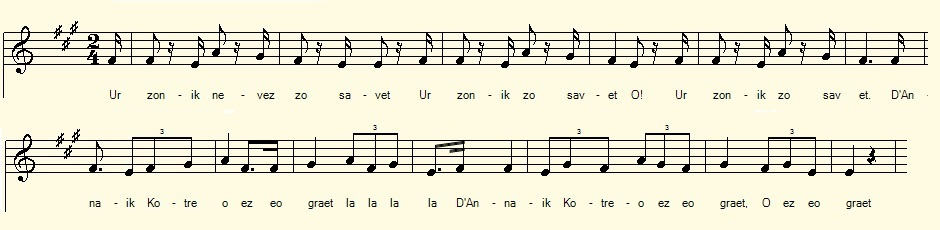
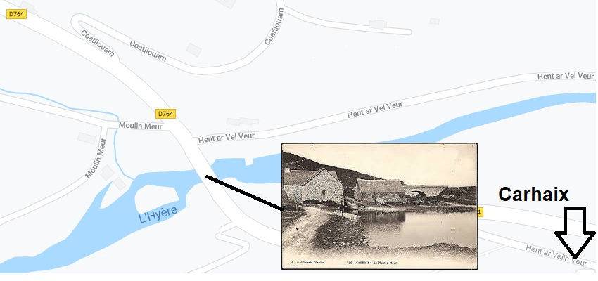
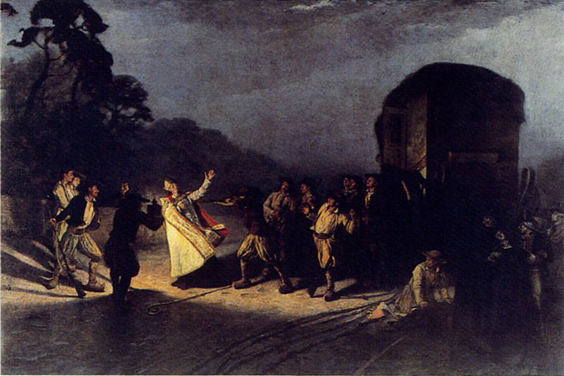

|
A propos de la mélodie Inconnue. Remplacée par un chant tirée de la revue "La paroisse bretonne de Paris" de l'abbé Cadic. Peut-être Annaik Le Coatero a-t-elle d'ailleurs vraiment abandonné un riche parti pour suivre un chouan. A propos du texte Ce chant vente les mérites de la servante Annaïk Le Coatero, pour retenir le nom consigné dans les registres d'état-civil, selon le site "Geneanet". La forme bretonne de ce nom telle qu'elle a été notée par La Villemarqué varie au cours du chant: "Kotreo" au début puis "Koat-treo" (KLT "Koad-Trev"= Bois-de la Trève). Comme dans le chant de Georges Brassens Les croquants, Annaïk a abandonné, alors que tout était prêt pour les noces, un riche parti, le fils du meunier de Milin-Veur (Grand-Moulin) pour suivre à Carhaix puis à Rennes un tailleur qu'on devine sans le sou. Le fiancé éconduit a le mauvais goût de poursuivre son ex-promise jusqu'à cette ville où on se moque de lui en le traitant de "kabon", "chapon", visiblement entendu ici comme un synonyme de "coucou" (cocu). La chanson joue un rôle analogue à celui que lui confère l'original des "Chouans": g. Me m'eus laket em spered da zevel ar zon-mañ Da rei keloù dioutan d'e barez ha de vamm, Ma ouzo ema he vab ken divlamm ha ken yarc'h Vel en deiz oa bet ganet ganti barzh ar bed-mañ. g. Si j'eus la fantaisie de composer ce chant, C'est pour qu'en sa paroisse, on le sache vivant. Que sa mère le sache aussi frais et dispos Que lorsqu'il vint au monde et dormait au berceau. Si ce n'est qu'il ne s'agit pas de transmettre des nouvelles, mais de diffuser des propos satiriques. On escompte que le chant parviendra au moins jusqu'au "Grand-Moulin" où demeure le personnage chansonné. Ce chant satirique est une création collective revendiquée par leurs auteurs, malgré les menaces proférées par celui qu'elle vise (str. 19). Iles déclinent leurs identités (sauf celles des douze "ezhec'h", chefs de familles qui eurent le privilègent d'entendre (ou de chanter) les premiers la chanson nouvelle, ("ar zonik nevez" d'un vers sans doute manquant dans le manuscrit). Ce genre de querelle était souvent vidé devant un tribunal. A propos de Louis Bouriquen Le premier chanteur est connu des lecteurs du Barzhaz Breizh, Loeiz Wouliken ou Bourighen, c'est-à-dire Louis Bouriquen. Il en est de même de Claude Lanhuel. L'"argument" d'"Alain-le -Renard", publié en 1845, se termine ainsi: "Le chant de guerre quon va lire, et que jai recueilli comme celui qui précède [c'est à dire Nominoé!] de la bouche dun vieux paysan nommé Loéiz Vourrikenn, de la paroisse de Lanhuel-en-Arez, soldat dans sa jeunesse de Georges Cadoudal, se rapporte à lune des deux victoires dAlain Barbe-Torte." (Dans l'édition de 1867, le nom de l'informateur ne figure plus. L'affirmation "se rapporte" est corrigée en "...doit se rapporter...") Et dans les notes qui suivent le chant, La Villemarqué ajoute: "Comme je demandais au paysan qui me les chantait quel était ce Renard barbu dont la chanson faisait mention : « Le général Georges sûrement! » répondit-il sans hésiter. On donnait effectivement à Georges Cadoudal le surnom de Renard, fort bien justifié par sa rare sagacité." Le "Renard" figure effectivement dans le 2ème carnet de collecte , p.194 et se prolonge en bas de la p. 195, mais sans indication de source. Quant à "Nominoé" il est absent des carnets, si ce n'est qu'il semble emprunter 2 strophes à l'une des notes manuscrites disséminées dans le carnet N°2 qui composent la "Tournée des étrennes", en l'occrurrence, celle de la p. 93. Ces deux indications d'origine, dont la deuxième est d'ailleurs contredite par l'argument de "Nominoé" dans l'édition de 1845 ("Je tiens ce chant de Joseph Floc'h, cultivateur, du village de Kergerez dans les montagnes...", phrase absente de l'édition 1867) sont donc aussi infondées l'une que l'autre. A la page Complainte de la Dame de Nizon, chapitre "Les noms litigieux", on a tenté de fournir une explication logique à ce curieux phénomène. Louis Bouriquen, personnage de chanson a certes existé, mais rien n'indique que La Villemarqué l'ait jamais rencontré. Bouriquen est mort en 1825; La Villemarqué avait alors 10 ans. En revanche, on trouvera à la suite du chant des documents communiqués par M. Jean-Yves Thoraval qui démontrent clairement que ce Bouriquen a été un chouan actif. |
About the tune Unknown. Replaced by a melody taken from the review "The Breton parish of Paris" published by the Rev. Cadic. Perhaps Annaik Le Coatero did really give up a good match to follow a Chouan fighter. About the lyrics This song extols the merits of maidservant Annaïk Le Coatero, to call her by the name recorded in the civil registers, according to the site "Geneanet". The Breton form of this name as it was noted by La Villemarqué varies in the song from "Kotreo" at the beginning to "Koat-treo" (KLT "Koad-Trev" = Wood-of the Hamlet). As in the song by Georges Brassens "Les croquants" (The parvenus), Annaïk gave up, though everything was ready for the wedding, a good match the Milin-Veur (Big-Mill) miller's son to follow to Carhaix then to Rennes a tailor who, we guess, was penniless. The rejected fiancé has the bad taste to pursue his ex-bride thither and make a scene prompting people to call him a "kabon", "capon", a word which they obviously used as a synonym of "cuckoo" (cuckold). The song is imparted a role analogous to that played by the original version of the "Chouans": g. Me m'eus laket em spered da zevel ar zon-mañ Da rei keloù dioutan d'e barez ha de vamm, Ma ouzo ema he vab ken divlamm ha ken yarc'h Vel en deiz oa bet ganet ganti barzh ar bed-mañ. g. I've put into my head to make this song to inform The parish and the mother to whom this son was born. May it convey to her that he's as nimble and healthy as when He was born into the world to share the fate of man. The song, in the present case is not aimed at conveying news, but spreading satirical remarks. It is expected that the song will reach at least as far as the "Big-Mill" where said character lives. This satirical song is a collective creation claimed by their authors, despite the threats made by the one it targets (str. 19). They proclaim their names (except those of the twelve "ezhec'h", heads of families who had the privilege of hearing -or singing in choir - the new song first ("ar zonik nevez" as addressed in a verse probably missing in the manuscript). This kind of quarrel was often cleared up in court. About Louis Bouriquen The first singer's name rings a bell to readers of Barzhaz Breizh: Loeiz Wouliken or Bourighen, whose French form is Louis Bouriquen. The same applies to Claude Lanhuel. The "argument" to the song "Alain-le-Renard", published in 1845, ends as follows: "The war song that we are going to read, and that I collected like the one above [i.e. Noménoé!] from the singing of an old farmer named Loéiz Vourrikenn, living in the parish Lanhuel-en-Arez, a former soldier of Georges Cadoudal, relates to one of Alan Twisted-Beard's two victories. " (In the 1867 edition, the name of the informant no longer appears. The verb "relates" is corrected to "... could relate ...") And in the notes following the song, La Villemarqué adds: "As I asked the peasant who sang them to me who was this bearded fox mentioned in the song:" General Georges, of course! "he replied without hesitation. Georges Cadoudal was really given the nickname "The Fox", which was very well justified by his rare sagacity. " The "Renard" actually appears in the second collection book, on p.194, continued at the bottom of p. 195, but without indication of source. As for "Nominoé", it is missing from the notebooks, but for two stanzas possibly borrowed from one of the handwritten notes interspersed in notebook N ° 2 which, once put together, make up the song "The Christmas gift tour", namely from p. 93. These two indications of origin, the second of which is also contradicted by the argument to "Nominoé" in the 1845 edition ("I learned this song from Joseph Floc'h, a farmer at the village Kergerez in the mountains ... ", this sentence being removed from the 1867 edition) are therefore equally ill-founded. On the Complaint of the Lady of Nizon page, chapter "Contentious names", we tried to provide a logical explanation for this puzzling fact. Louis Bouriquen was a song character who certainly had existed, but there is no hint that La Villemarqué ever met him. Bouriquen died in 1825; La Villemarqué was then 10 years old. On the other hand, as evidenced in the documents kindly sent in by Mr. Jean-Yves Thoraval, there is no doubt that this Bouriquen was an staunch Chouan. |
|
BREZHONEG (Stumm KLT) D'ANNAÏK KOTREV Page 108 1. [Ur zonig nevez zo savet.] [1] DAnnaik Kotrev ez eo graet, 2. Matezh gant n' aotrou Kelennek. (paysan) [2} Guillaou ar Pifon pa hi laeret [3] 3. - Annaik Kotrev, 'peus graet mat, Dilezel map ar Madiart [4] 4. E arc'hant ganeoch en-deus foetet Hag e amzer en-deus kollet, 5. Graet en-deus ur chavel a goad sech Ha bremañ eñ luskel gant an nerzh. 6. Graet en-deus a goad rouan Ha bremañ eñ luskel e-unan. [5] 7. Ur varrikenn win en-doa prenet D'ober e zim(ez)i hag ec'h eured. 8. Ar Madiek a choulenne E Vilin Veur pa dremene : 9. - 'Peuz ket gwelet evit an deiz Annaik Koatrev o vont dre-me? . 10. - Trezek Karahes emañ-hi aet War lost ur march du inkane. 11. E ti ar chemener (taillantur) eo diskennet. - E ti ar chem'ner (tailleur) eo erruet, 12. E vestrez koant en-deus gwelet Met ger 'n-deus kredet da laret, 13. Doc'h a Garahes int aet Trezek Roazhon int baleet Page 109 / 57 14. Ar Madiek a lavare War pa(v)e Roazhon pa balee: 15. - Roit-c'hwi Kaboned d'hini d'hoc'h (eus) choant Kaboned awalch zo er ger man. 16. - Evit 'maomp añvet Kaboned 'N-omp ket deu't amañ da vout debret 17. Ni zo Kaboned hag a ouenn vat, Hag ho lakayo da vrañskellat. 18. Ar Chabon kozh a lavare Er Vilin Veur pa tremene: 19. - Piv bennag 'gano ar zon-mañ Vo lakaet e wad da yenañ. ... 20. - Savet eo bet ha kanet vo, Bezet drouk gant nep a garo! 21. Me hen c'hano a-bouez va fenn, Ken vin kle(v)et e Zant Doha en daou-benn [6} 22. Me hen chano dam blijadur Ken vin klevet e Vilin Veur. [7] 23. J. M. Gaonach n-eus hen skrivet Ha Loeiz Wouliken (Bourighen) hen kanet 24. Ha(g a)n aotrou Baleven och assistañ (paysan) Klaod Al Lann-huel memez-tra. 25. Hag an daouzek o(zh)ach d'eus ar barrez Holl (a) oa eno war e lech (sur les lieux). Transcrit KLT par Christian Souchon |
FRANCAIS A ANNE LE COATERO Page 108 1. [On vient de faire un chant nouveau ] [1] Sur Annaïk Le Coatero: 2. Le Pifon est parti avec.[3] La servante de Quélennec. [2] 3. - Vous fîtes bien, à tous égards, De quitter le fils du Richard. [4] 4. Il a gaspillé son argent Avec vous et perdu son temps, 5. Il a fait un berceau d'ébène Il le balance à perte d'haleine. 6. A fait un berceau d'acajou Il le balance seul, c'est tout! [5] 7. Et tant pis pour le fût de vin En vue du mariage prochain. - 8. Ledit Richard s'est présenté Au Moulin-Meur pour demander: : 9. - A-t-on vu passer aujourd'hui Anne Le Coatero par ici? . 10. - Oui, elle est partie pour Carhaix En croupe sur un cheval bai . 11. Elle est, c'est sûr, chez le tailleur! - Il va chez l'oiseau de malheur. 12. Il a vu sa belle bientôt, Sans qu'il n'ait osé souffler mot, 13. De Carhaix ils s'en sont allés A Rennes, sans désemparer. - Page 109 / 57 14. Le Richard en proie à sa peine Arpentait les trottoirs de Rennes. 15. - Donnez donc des chapons (cocus) à qui En veut. Il y en a trop ici. 16. - Que nous soyons chapons ou pas: Qu'on nous mange, on n'accepte pas. . 17. Chapon, soit, mais de bonne race, Gare au chapon, si tu l'agaces! - 18. La malheureux Chapon revient En passant par le Grand-Moulin: 19. - Quiconque chantera ce chant Je lui ferai geler son sang. ... 20. - Ce chant est fait pour qu'on le chante, Tant pis pour ceux qu'il mécontente! 21. Je veux le chanter à tue-tête, Qu'aux deux Saint-Doha pas une miette [6] 22. N'en soit perdue. A pleine voix Au Moulin-Meur on l'entendra. [7] 23. J. M. Gaonac'h l'a rédigé Et Louis Bouriquen l'a chanté 24. Sieur Baleven les assistait... Claude Lanhuel que j'oubliais! 25. Douze patrons de la paroisse: Tous ces gens occupaient la place. Traduction Christian Souchon (c) 2020 |
ENGLISH A SONG TO ANNAIK LE COATERO Page 108 1. [A song was made, not long ago] [1] About Annaïk Le Coatero, 2. Maidservant at Quélennec's mill [2] Eloped with Seaweed-Poker Bill. [3] 3. - Anne, you did well to abandon To his fate the Moneybags' son. [4] 4. Who has spent every crown and dime For you, wasting his precious time, 5. He made a cradle of dry wood Which he swung as high as he could. 6. A cradle of mahogany He'll swing alone subsequently! [5] 7. Too bad for the barrel of wine Devised the wedding folks to prime! - 8. Moneybags asked, walking onward The Big-Mill folks he encountered: 9. - Did anyone here see today Anne Le Coatero come that way? 10. - Yes, I did: she left for Carhaix She rode pillion. The horse was bay. - 11. When he heared that, he hastened there And he rang at the tailor's lair. 12. To see his girl he could afford And yet he dared not breathe a word, 13. Now from Carhaix the both had left For Rennes, without taking a rest - Page 109 / 57 14. Moneybags again and again Wandered the sidewalks of Rennes. 15. - Capons should be carried elsewhere: Here they've enough of them to spare. 16. - Whether we are capons or not, We shall not be cooked in your pot. 17. Capons are we? But of good breed, Beware! Capons could make you bleed!. - 18. The unhappy Capon returns To the Big-Mill, full of concern: 19. - Whoever sings these ugly strains I'll make their blood freeze in their veins. ... 20. - A song must be sung, every bit, Too bad for those who don't like it! 21. I'll sing at the top of my voice, So that both Saint Dohas rejoice. [6] 22. I'll take pleasure in singing it So that at Big-Mill they hear it. [7] 23. J. M. Gaonac'h has put it down. By Louis Bouriquen it was sung. 24. Baleven had a hand in it Claude Lanhuel to it attended. 25. Twelve patrons of the town were there On the spot: To that they can swear! |
|
[1] Ce premier vers est absent du manuscrit. Cette entrée en matière où s'exprime l'importance qu'on attache à la nouveauté, à l'inédit est cependant tout à fait usuelle. [2] Quélennec, Baleven, Gaonac'h sont des noms assez courants. Les noms Bouriquen et Lanhuel sont examinés ci-après. [3] Guillaume Le Pifon. Ce nom signifie "ringard", à savoir une pelle étroite qui sert à brasser les cendres dans un four à goémon. [4] Le fiancé malheureux est appelé "madiart" puis "madiek", des mots dont on peut supposer qu'ils signifient "richard" (madoù= "biens, richesses"). [5] Les strophes 5 et 6 sont reprises et développées page 69/36 du carnet, en pleine page, puis verticalement dans la marge droite pour fournir les 9 premières strophes du chant intitulé "Kañvoù" (Deuil), lequel deviendra à son tour "An amzer dremenet", "Le temps passé" dans le Barzhaz. Parler d'un berceau en bois sec ou en bois "rouan" (de plusieurs couleurs mêlées) devenu inutile semble naturel dans une histoire de fiançailles rompues la veille d'un mariage. L'image devient symbolique dans le "Temps passé" où l'on évoque l'enfant mort que les Bretons s'évertuent à bercer: il s'agit de leurs espérances trahies par le nouveau régime politique. Il est difficile de dire si c'est le meunier Pichon de Gourin, le "plus célèbre chanteur de noces des montagnes" dont parle l'argument du chant (version 1845) ou le Barde de Nizon qui a eu l'idée de cette transposition. [6] La strophe 21 est difficilement lisible. Si le 2ème vers est bien "Ken vin klet e Zant Doha en daou benn", il pourrait signifier "Afin que je sois entendu à Saint-Doha dans les deux directions". Saint Doha ou Saint Doccus était vénéré principalement à Primelin, à côté d'Audierne, sur la Pointe du Raz et à Merdrignac, à mi-chemin entre Pontivy et Rennes. [7] L'action se déroule à Carhaix. Le Milin-Veur aujourd'hui appelé Moulin-Meur (ou "ar Vel Veur") est un faubourg de Carhaix-Plouguer au nord-ouest de cette aglomération, sur l'Hyères (Ster Ier). Cf. plan ci-dessous. |
[1] This first line is absent from the manuscript. This introduction to the subject, in which the importance attached to novelty and novelty is expressed, is however quite usual. [2] Quélennec, Baleven, Gaonac'h are fairly common names. The names Bouriquen and Lanhuel are discussed below. [3] Guillaume Le Pifon. This name means "nerdy", ie a narrow shovel which is used to brew the ashes in a seaweed oven. [4] The unhappy fiancé is dubbed "madiart" and "madiek", both words meaning apparently "moneybags" (madoù = "goods, wealth"). [5] Stanzas 5 and 6 are taken up and developed on page 69/36 of the notebook, in full page, then vertically in the right margin to provide the first 9 stanzas of the song entitled "Kañvoù" (Mourning), which in turn will become "An amzer dremenet", "In olden times" in the Barzhaz. To speak of a dry wood or "roan" wood cradle (of several mixed colors) that has become useless seems but natural in a story of broken off engagement, some days before the wedding at that. The image becomes symbolic in "Olden times" whith a dead child that the Bretons strive to rock, representing their hopes betrayed by the new political regime. It is difficult to decide whether it was the miller Pichon of Gourin, the "most famous honeymoon singer of the mountains" mentioned in the 1845 song's "argument" or the Bard of Nizon who had the idea for this transposition. [6] Stanza 21 is hardly legible. If the second line is "Ken vin klet e Zant Doha en daou benn", it could mean "So that I may be heard in Saint-Doha in both directions". Saint Doha or Saint Doccus was venerated mainly in Primelin, near Audierne, on the Point du Raz, and in Merdrignac, halfway between Pontivy and Rennes. [7] The action takes place in Carhaix. Milin-Veur today called Moulin-Meur (or "ar Vel Veur") is a suburb of Carhaix-Plouguer to the north-west of this settlement, on the Hyères river (Ster Ier). See plan below. |

|
A. Note du 21.04.1801 du capitaine Le Comte au Préfet du Finistère. Trégourez le 1er Floréal an 9 [21 avril 1801] ; Le Comte, capitaine adjoint, commandant la colonne mobile, au Préfet du Finistère : "Je fais conduire devant vous le nommé Lamothe Bouriquen pour lequel je joins une note particulière. Je l'arrête en vertu d'un mandat d'arrêt lancé contre lui et dont je suis censé ignorer la révocation." B. Note au Préfet du 21.04.1801 du capitaine Le Comte "Le nommé Lamothe Bouriquen, habitant du village de Lamothe en Trégourez, a professé depuis longtemps les principes les plus décidés pour la chouannerie. Il est connu pour y avoir pris une part très active, l'année dernière, comme agent, instigateur, dépositaire et correspondant, malgré son caractère équivoque et son peu de moyens. - il parait que nous avons été dénoncés mais avant Pâques on verra. Ce propos est venu à la connaissance de Citoyen Saillour. Le Citoyen Saillour est aussi instruit de la plupart de ces faits ; on peut invoquer son témoignage et celui des hommes recommandables que je cite, en employant les ménagements convenables. Je persiste à représenter qu'il est absolument nécessaire que Lamothe soit éloigné des communes infestées du brigandage, tant qu'il subsistera de la même manière et je le recommande au Préfet, pour qu'il lui soit enjoint de fixer son domicile à Brest ou au Port-Launay. La demande que je prends la liberté de former à son égard est conforme aux désirs que m'a témoignés le sous-préfet de Châteaulin. Au village de Lamothe en Trégourez, le 1er Floréal an 9 [18 avril 1801]. Lecomte. C. Passeport d1 an délivré à Bouriquen par la mairie de Trégourez. Passeport pour un an en conformité avec la loi du 28 Vendémiaire an VI / 19 octobre 1797 Département du Finistère Sous-Préfecture de Châteaulin Mairie de Trégourez Laisser librement passer le Citoyen - Louis Charles Bouriquen, - originaire et domicilié an la commune de Trégourez, - âgé de trente-sept ans, - taille d'un mètre cinq cent quatre-vingt-dix-huit millimètres, - chevaux et sourcils noirs foncés, front large, un peu vouté, nez long un peu aquilain, yeux bleus, menton fourchu, visage long un peu large; - bourgeois cultivateur, désirant voyager dans ce département et ailleurs et prêtez lui aide et assistance en cas de besoin. Délivré au bureau de la mairie de Trégourez ce jour douze nivôse an neuf sous notre seing, celui de notre adjoint et du requérant les dits jour et an. [2 janvier 1801] Bouricquen, Jean Mahé maire, Laurent Péront adjoint; Enregistré sous le N° 485 au bureau de police de la mairie de Brest le 5 Germinal an 9. [26 mars 1801] Vu à la mairie de Brest le 5 Germinal an 9. Vu par l'adjudant de la place de Brest en état de siège le 6 germinal an 9. Vu à la mairie de Briec le 13 Germinal an 9 [3 avril 1801]. Vu à Châteaulin le 23 Germinal an 9 [13 avril 1801]. |
D. Certificat de fidélité à la famille royale du 24 novembre 1814, "Nous soussignés certifions que le Sieur Louis Charles Bouricquen a pendant sa longue proscription donné des preuves constantes de fidélité et d'un entier dévouement pour la Famille Royale, Nous attestons en outre que son dévouement était porté à un si haut période [degré ?] que ses moyens d'existence en ont été épuisés. Fait au bourg de l'Hôpital-Camfrout, canton de Daoulas, arrondissement de Brest, département du Finistère, le 24 9bre 1814." E. Notice biographique Louis Charles Bouricquen [Bouriquen ou Bourriquen] de la Mothe [de La Motte] est né à Trégourez le 6 septembre 1764, marié une première fois à Châteaulin le 10 Thermidor an 7/28 juillet 1799 avec Josèphe Marie Bernard de Beaumont (décédée le 21 juin 1813) puis une seconde fois avec Gabrielle Quillien ??? Il est décédé à Brest le 3 novembre 1825. A son mariage en 1799, il se déclare cultivateur. En 1813 (il perd sa première épouse) et en 1814, il se dit garde forestier particulier et habite à l'Hôpital-Camfrout. En janvier 1814, il demande un poste dans les douanes ou gardien au port de Brest. A son décès à Brest en 1825, sa profession indiquée est : journalier au magasin général de la Marine. F. Note sur l'assassinat de l'évêque Audrein Yves-Marie Audrein, né à Gouarec, le 14.10.1741, mort à Kerfeunteun en Quimper le 19.11.1800 (28 Brumaire an IX), fut évêque assermenté et député à l'Assemblée Législative (sept.91 à sept.92) et à la Convention Nationale (sept. 92 -1795). Il fut le premier vicaire de l'évêque du Morbihan, l'un des hommes politiques les plus virulents envers les réfractaires. Il vota la mort du roi avec l'amendement Mailhe. Il était l'ami de l'Abbé Grégoire , le créateur du Conservatoire des Arts et Métiers. Cette .protection lui valut de devenir évêque du Finistère, le 22.7.1798. Au cours d'un déplacement, le 19.11.1800, sa voiture fut arrêtée par des Chouans conduits par 5 chefs connus: Michel-Armand de Cornouaille, Charles Lecat dit "La Volonté" (1755 -30.12.1801), Jean-Baptiste Lignaroux dit "Brise-Barrière", Hervé Benden dit "Sans-Quartiers" et Le Goff dit "La Grandeur" (mort en 1801). Il fut fusillé sur la voie romaine Quimper-Châteaulin, à la Chapelle Saint-Hervé de Kerfeunteun, pour avoir voté la mort du roi. Un tribunal spécial du Finistère prononça le 30 octobre 1801 plusieurs condamnations à mort à l'encontre des assassins. La chapelle de Menfouès en Kerfeunteun fut reconstruite en 1801 avec les pierres de la Chapelle Saint Hervé détruite, en expiation de cet assassinat.  Assassinat de l'évêque Audrein par Hippolyte Berteaux (1889) |